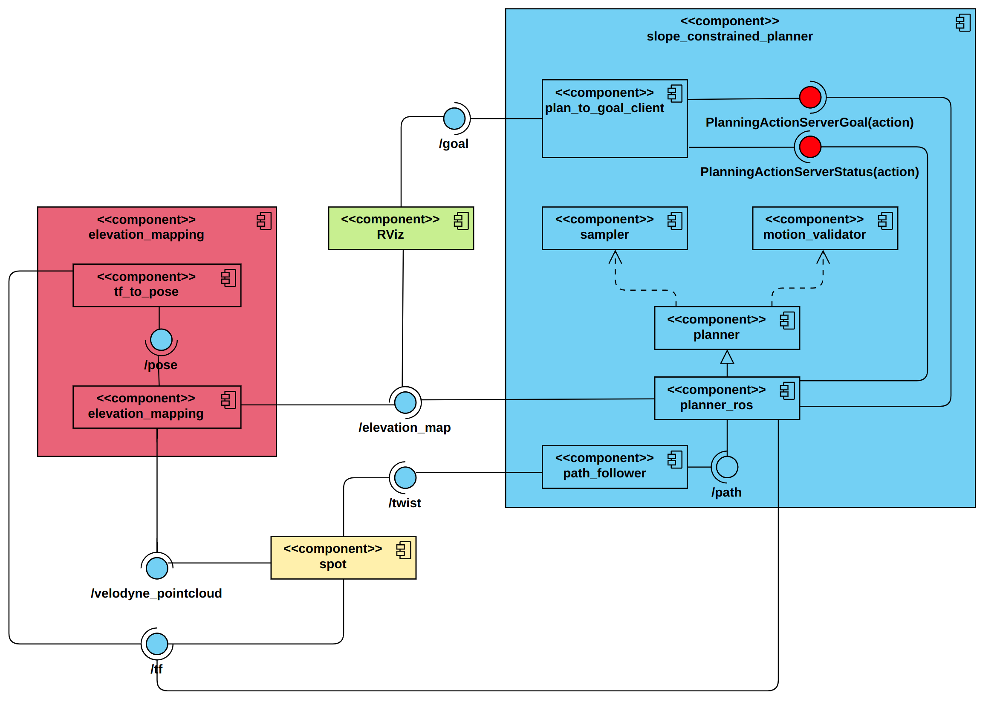
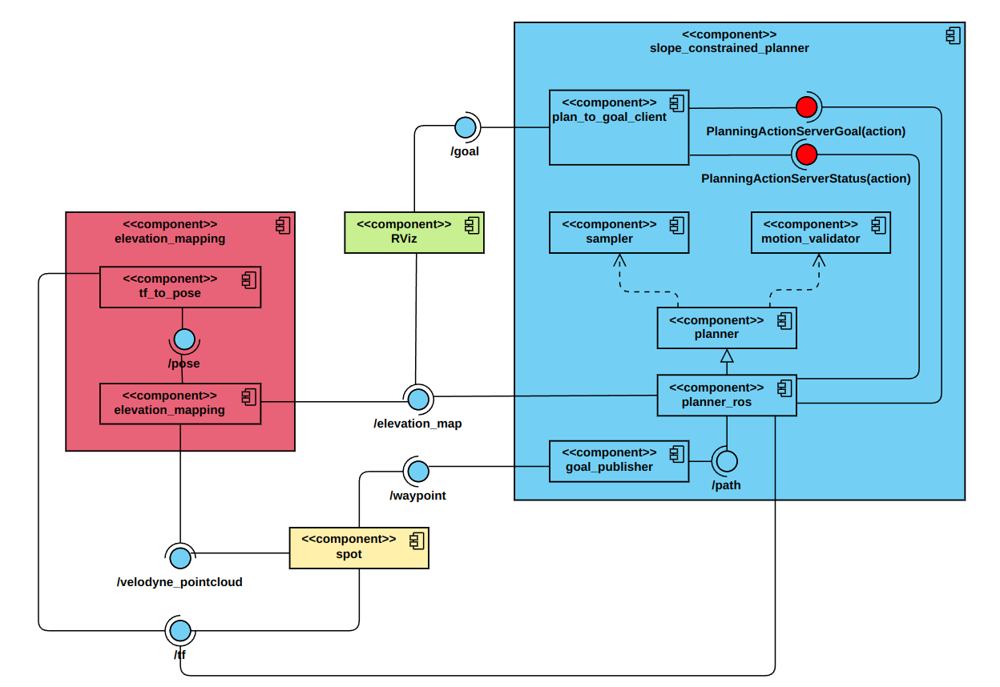

Software Architucture
The software architucture of this experiment for both simulation and real world scenarios are represented in the following figures.
Simulation:
{kind=link}
Real world:
{kind=link}
The components of this software architucture can be described as follows:
slope_constrained_planner
sampler: Uses the grid map data provided by the
elevation_mappingnode to sample random states. Each sampled state cosists of the position and orientation (in quaternion representation) data. In order to implement the robot’s heading constraint, once a random state is sampled from the grid map, roll and pitch angles are dervied from map, and then the state frame would rotate along its z-axis until the heading angle reaches the desired threshold.motion_validator: Considers the motion slope and length constraint. Additionally, if the motion slope is greater than a small value, the yaw difference between two states should not be greater than a threshold.
planner: Uses the states found by the sampler and considering the motion constraints, tries to find the most optimal path (path length optimization objective), based on different planning algorithms provided by OMPL (e.g. PRMstar, LazyPRMstar, RRTstar and RRTsharp), and publishes it on
/pathtopic.planner_ros: An inheritance from the
plannerbase class, in order to be implemented in ROS environment.plan_to_goal_client: A helper node to get the goal pose from
RVizand send it as a goal to thePlanningActionServer.path_follower (simulation): Implement a PID controller on the robot’s base, in order to move it through the found path.
goal_publisher (real world): An auxiliary node, gets the next wapoint to go, and publishes it to the
gotopointlocal path planner.
elevation_mapping
tf_to_pose: A helper node to convert the
/tfdata to pose in order to be used in theelevation_mappinnode.elevation_mapping: Provides a
grid_mapof the environment using the/velodyne_point,/poseand/tftopics, and publishes it on the/elevation_mapping_rawtopics.